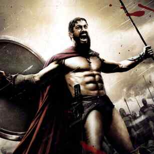
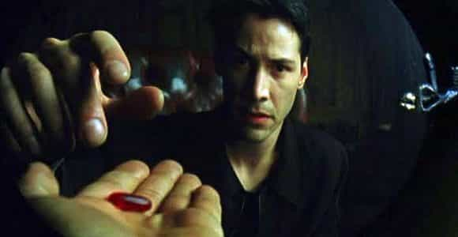

James Augustine is a writer and classically trained musician who enjoys hitting on beautiful girls and finding new and better ways to evolve in his masculinity. Follow James on Twitter


I submitted an article to ROK a while back about my philosophies on game and women, and I got an email back from Master Roosh that said, “James, I’m going to pass because there’s too much anger in the article.” Talk about a kick to the balls, but I actually completely understood his point. After all, I am an angry white man.
Though his advice was invaluable, it very much made me pause and think about the burning rage I have for women, and lots of other things, to be honest. I asked myself how I got here. And more importantly, is my anger serving me any good? At this point, I think the answer is decidedly, “no, you need to chill out, dude.”
I don’t know if I will ever find the exact genesis of my anger, but I compiled a list of the top five reasons you should let go of your anger right goddamn now.

Women don’t like angry men. We think that acting like one of the 300 soldiers, screaming at the top of our lungs with a glistening six-pack, is what gets women wet. In reality, women want to feel safe.
Those dudes who were Spartan warriors were probably a lot chiller than your high-powered boss who wears his Rolex at LA Fitness while “getting his pump on.” That guy gets laid, but only because he essentially pays for it, whether indirectly or not. In reality, he’s an angry mess.
True warriors of yore blended with the seasons and knew their death was around the bend at any moment. You’d have to be pretty ‘laxed to be okay with all of that. Women love strength, but true strength comes with a sense of calm; chicks will be calm if you are calm, and then their legs are much more likely to open so they can have your chill babies.

Face: you cannot meditate if you’re angry. You will be super distracted by all the shit around you and instead of focusing on your breathing, you’ll be muttering a string of curse words that would make your mother cry.
Meditation helps us focus on our goals with laser-like accuracy; without it, I would be lost as to my short- and long-term goals. A bonus to meditation is that it also helps you get rid of anxiety.
Besides pharmaceuticals (which I highly recommend against), meditation is pretty much the only way you’re going to work through your shit, especially if you’re an anxious person.
Combine anxiety with anger and you are a recipe for anguish and pain. Nothing will let you get over that unless you look within and figure your stuff out. So, Namaste, motherfuckers.
Pretty simple here. Everyone knows that stress is the number one killer that our luxurious, privileged lives afford us as Western men.
In reality, today there is so much bullshit on the news, in school, at work, and in dating that it’s hard not to be stressed as fuck. But if you have the ability to tune all that crap out, not only will you live a little longer (who really cares, by the way) but you’ll look younger and hotter and probably bang a bit more.
Women want to see the weathered face of a full life on an older man, not the angry perma-scowl your grandpa had from enduring years of his nagging wife (that’s your grandma, by the way, be nice).
Take your scars with pride, but let go of all the bullshit you hear in the news and take from women and laugh in the face of it all. Otherwise, it’ll be your face that gets laughed at: get it?

Ever wondered what happened to the namsy-pamsy little boy you were before you were redpilled? Why, oh why didn’t I take the blue pill?
Nah, fuck that! But the red pill has the tendency to turn a lot of potentially good guys into angry cretins, trolling /pol/, screaming about white genocide (just kidding /pol/, I love you, don’t dox me).
Although white genocide is probably real, once you’ve figured out the truth, what good does it do to get angry about it? Nothing, I tell you. The most realistic thing you can do to fight back against the globalists is to find a good wife, knock her up, and subsequently prevent your daughters from becoming whores and your sons from becoming pussies.
Otherwise, memeing about what a lost cause the world is and how angry you are at those who shall not be named will only get you so far. Don’t get angry, get everything. Even if the world is fucked, getting angry will only serve to cloud your judgment and further harm your cause.
I truly think that anger is a tool in the beginning stages of wokedom. We all have at one time asked ourselves, “Why am I not getting laid? Why are my teachers all trannies and gay men? Why was my dad not around? Why did no one tell me I shouldn’t be a complete pussy all the time and start providing my own way in life?”
I know the anger that I felt from asking all these questions is what led me away from my initial beta ways into becoming my more masculine self. The anger is what starts the fire, but if you don’t get that emotion under control, you’re gonna burn the whole damned house down.
If you can harness this (well-deserved) feeling in the initial stages of waking up to the despicable and degenerate society around you, you can turn that anger into action. Staying stuck in your anger will keep you exactly like that: stuck.
Resolve yourself to the transformation and evolve into your true form of a good, strong, masculine dude who isn’t moved by anything. They say not to sweat the small stuff, but it’s way, way more important not to sweat the big stuff.
I know that my anger is an everyday bitch I will have to tame, but being aware of it is the first step, and conquering it is the last. Let your anger tune you in to the realities of the world, but once you’ve awoken from your slumber, dust that stuff off, and live your life. Your mind, body, and spirit will thank you. And remember that while anger may feel good, it’s not a good look, bro.
Read More: 11 Ways To Master Your Anger